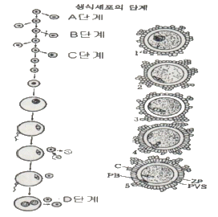
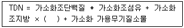
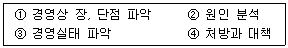
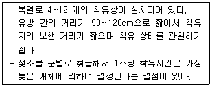

축산산업기사 (2018-09-15 기출문제)
1과목: 가축번식 육종학
1. 돼지의 모돈 생산능력지수(SPI)에 대한 설명으로 설명으로 옳은 것은?
- 모돈의 생시 복당체중과 보정된 21일령 한배새끼 전체 체중을 이용하여 계산한다.
- 모돈의 번식, 육성능력이 산차에 따라 달라지므로 모돈생산능력지수는 산차에 대해 보정 한다.
- 정확한 모돈 생산능력지수 계산을 위해 복당포유 자돈수에는 위탁포유돈을 포함하지 않는다.
- 21일령 한배시끼 전체체중은 복당 포유개시 자돈 전체 체주에 대해 보정계수를 가산하여 보정 한다.
(정답률: 68%)

2. 돼지의 성 성숙에 대한 설명으로 옳지 않은 것은?
- 격리 사육하는 것보다 군사 사육의 경우 성 성숙이 빠르다.
- 순종 돼지가 잡종 돼지보다 성 성숙이 빠르다.
- 수송하거나 환경을 바꿔주면 성 성숙이 촉진된다.
- 에너지 사료의 보충 급여가 성 성숙을 빠르게 한다.
(정답률: 75%)
3. A품종의 평균 산자수가 12두, B품종의 평균 산자수가 10두라면, A 품종과 B 품종 간의 교잡에 의하여 생긴 F1의 평균 산자수가 14두인 경우 잡종강세 강도는?
- 약 24.3%
- 약 27.3%
- 약 29.3%
- 약 31.3%
(정답률: 69%)
4. 호르몬 작용의 특징으로 틀린 것은?
- 어떤 반응에 대해서도 에너지를 공급하지 않는다.
- 극히 적은 양으로도 기능을 발휘한다.
- 혈류로부터 장시간 동안 소멸되지 않는다.
- 반응의 속도를 조절하고 새로운 반응을 일으키지 않는다.
(정답률: 67%)
5. 불량한 재래종 가축의 능력을 비교적 짧은 시일 내에 어느 정도의 수준까지 향상시키는 데 효과적으로 이용할 수 있는 교배 방법은?
- 순종 교배
- 계통교배
- 상호역교배
- 누진교배
(정답률: 85%)
6. 다음 난자의 발달 단계를 나타내는 모식도이다. A, B, C, D단계 중 제 2극체가 방출되는 단계는?

- A 단계
- B 단계
- C 단계
- D 단계
(정답률: 77%)
7. 젖소의 외모심사 형질로 적절하지 않은 것은?(오류 신고가 접수된 문제입니다. 반드시 정답과 해설을 확인하시기 바랍니다.)
- 유방의 크기
- 사지(四肢 )의 건전도
- 체적(體積 )
- 후산정체를 일으키기 쉽다.
(정답률: 85%)
8. 난소의 기능이상에의한 번식장해 현상이 아닌 것은?
- 난포발육과 배란이 비정상적으로 된다.
- 무발정이 지속된다.
- 이상 발정이 유발된다.
- 후산 정체를 일으키기 쉽다.
(정답률: 80%)
9. 돼지에서 유산을 일으키는 질병이 아닌 것은? (문제 오류로 실제 시험에서는 모두 정답처리 되었습니다. 여기서는 1번을 누르면 정답 처리 됩니다.)
- 오제스키병
- 돈단독
- 돼지콜레라
- 브루셀라병
(정답률: 77%)
10. 산란계의 난형에 대한 설명으로 틀린 것은?
- 알의 길이에 대한 알의 너비의 비율인 난형 지수로 나타낸다.
- 고도의 유전력을 가지는 형질이기 때문에 개체 선발로 개량이 가능하다.
- 난형은 타원형이 적당하며 너무 길거나 둥글면 포장이 힘들고 상품가치가 저하된다.
- 난형 지수는 74 정도가 바람직하며, 대개 72~76 정도이면 양호하다고 할 수 있다.
(정답률: 72%)
11. 선발된 젖소 집단의 평균은 7000Kg 이고, 모집단의 평균은 5500Kg 이라면 이 집단의 선발차는 몇 Kg 인가?
- 1500
- 3000
- 5500
- 7000
(정답률: 84%)
12. 난소에서 일어나는 발정 개시부터의 생리적 변화를 순서대로 나열한 것은?
- 난포발육 → 성숙 → 배란 → 황체형성 → 퇴행
- 난포발육 → 배란 → 퇴행 → 황체퇴행 → 형성
- 황체형성 → 퇴행 → 난포성숙 → 발육 → 배란
- 황체퇴행 → 형성 → 난포발육 → 성숙 → 배란
(정답률: 76%)
13. 젖소의 주요 경제형질이 아닌 것은?
- 번식효율
- 증체율
- 체형
- 유지량
(정답률: 63%)
14. 젖소의 분만시 혈장 내의 칼슘과 무기인의 급속한 감소로 발생하는 질병은?
- 케토시스증
- 임신중독
- 질탈
- 유열
(정답률: 73%)
15. 산란계 선발요건과 개량 방법이 아닌 것은?
- 다산일 것
- 산란하는 동안 폐사율이 적을 것
- 도체의 상품적 가치를 높이기 위해 가슴이 넓고 깊은 개체를 선발 할 것
- 사료이용성이 좋을 것
(정답률: 81%)
16. 정장 중에 함유되어 있는 유기산으로서 정액의 응고 방지와 삼투압 유지에 관계하며 정낭선의 분비기능 진단에 이용되는 물질은?
- 구연산
- 피루브산
- 과당
- 테스토테론
(정답률: 71%)
17. 뇌하수체 전엽에서 분비되며, 유즙의 분비에 매우 중요한 역할을 하고, 모성 행동을 발현시키는 호르몬은?
- FSH
- LH
- GnRH
- Prolactin
(정답률: 70%)
18. 소의 발정주기 중 출혈은 어느 시기에 나타나는가?
- 발정전기
- 발정기
- 발정후기
- 발정휴지기
(정답률: 76%)
19. 가축의 정자가 가장 활발한 전지운동성을 보이는 온도는?
- 39~40℃
- 37~38℃
- 32~33℃
- 17~18℃
(정답률: 74%)
20. 가축의 암컷 생식기 질환 중 가장 많이 발생되는 것은?
- 난소질환
- 나팔관 질환
- 자궁 질환
- 자궁경관 및 질환
(정답률: 68%)
2과목: 가축사양학
21. 가축이 10일 동안 12Kg 의 사료를 섭취하고 10Kg 체중이 증가 했다면 이 때 각각의 사료요구율과 사료효율은?
- 사료요구율 = 1.2, 사료효율 = 0.83
- 사료요구율 = 0.83, 사료효율 = 1.2
- 사료요구율 = 1.4, 사료효율 = 0.95
- 사료요구율 = 0.95, 사료효율 = 1.4
(정답률: 72%)
22. 다음 중 사료 에너지의 표현단위로 가장 적절하지 않은 것은?
- 가소화양분총량(TDN)
- 가소화조단백질(DCP)
- 가소화에너지(DE)
- 정미에너지(NE)
(정답률: 64%)
23. 일반적으로 배합사료 원료 중 가장 높은 비율로 혼합되는 단미사료는?
- 수수
- 밀
- 옥수수
- 보리
(정답률: 81%)
24. 다음 중 에너지 대사에 대한 설명으로 가장 적절한 것은?
- 유지에 필요한 에너지는 체중이 증가할수록 감소 한다.
- 대사에너지의 이용효율은 비육시보다 유지시 더 높다.
- 섬유질사료의 에너지 이용률은 돼지와 닭이 소보다 높다.
- 증체시 에너지 이용효율은 조사료 급여비율이 높을수록 증가한다.
(정답률: 52%)
25. 가소화영양소총량(TDN)을 구하는 식으로 식으로 ( )에 들어갈 내용은?

- 1.25
- 2.25
- 3.25
- 4.25
(정답률: 75%)
26. 다음 중 거세의 효과에 대한 설명으로 가장 적절하지 않은 것은?
- 근내지방도가 비육기에 크게 증가한다.
- 근섬유가 가늘어지면서 고기의 연도가 개선된다.
- 소의 성질을 온순하게 하여 사양관리가 용이하다.
- 웅성호르몬의 수준이 증가한다.
(정답률: 83%)
27. 우유 중에 카로틴 함량이 가장 풍부한 계절은?
- 봄
- 여름
- 가을
- 겨울
(정답률: 71%)
28. 다음 중 절식대사에 대한 설명으로 가장 적절하지 않은 것은?
- 동물이 섭취한 사료의 소화흡수가 완전히 끝나면 근육과 간에 저장되어 있던 글리코겐이 분해되어 에너지를 공급한다.
- 절식시 체단백질 분해량은 체지방이 상대적으로 적게 축적된 어린 동물이 늙은 동물보다 더 많다.
- 내생질소는 내생뇨질소 + 대사분질소이며 기초대사와 관련된 내생질소는 주로 내생질소를 의미하고, 대사분질소는 소화효소에 기인된 것으로 기초 대사와 직접 관련된 것은 극히 적다.
- 무기물 대사는 절식 때도 활발히 일어나고 분해 된 무기물은 전부 배설된다.
(정답률: 65%)
29. 우유의 품질등급 중 체세포수의 변화에 영향을 주는 요인이 아닌 것은?
- 유두상처
- 개체 스트레스
- 비유일령
- 착유두수
(정답률: 72%)
30. 한우의 발육특성 중 육성기에 활발하게 성장되 체조직이 아닌 것은?
- 뼈
- 소화기관
- 골격
- 근내지방
(정답률: 73%)
31. 병아리에서 비타민 E가 부족하여 발생되는 삼출성 소질을 예방 또는 치료하기 위해 사용되는 것은?
- 셀레늄 (Se)
- 몰리브덴(Mo)
- 망간(Mn)
- 유황(S)
(정답률: 76%)
32. 탄수화물의 영양소로서 가장 기본적인 기능은?
- 에너지공급원
- 근육형성
- 내분비촉진
- 효소분비촉진
(정답률: 86%)
33. 착유우에 필요한 필수아미노산 중 황을 함유하고 있으면서 제1 또는 제2 제한 아미노산으로 알려져 있는 것은?
- Lysine
- Cysteine
- Methionine
- Leucine
(정답률: 60%)
34. 다음 중 분만 전·후에 젖소에게 일어나는 현상으로 가장 적절하지 않는 것은?
- 태아의 급격한 성장으로 에너지 요구량이 증가한다.
- 태아의 급격한 성장으로 단백질 요구량이 증가한다.
- 분만 후 산유량과 체중이 증가한다.
- 분만시 사료섭취량이 감소하여 체지방이 손실된다.
(정답률: 72%)
35. 한우를 체조직의 발육단계에서 지방이 침착되는 순서를 가장 바르게 나열한 것은?
- 피하 → 근육 내 → 신장 → 내장
- 신장 → 내장 → 피하 → 근육 내
- 신장 → 근육 내 → 내장 → 피하
- 내장 → 근육 내 → 피하 → 신장
(정답률: 69%)
36. 가금의 사양관리에서 온도차 환기에 대한 설명으로 가장 적절하지 않은 것은?
- 따뜻한 공기는 비중이 적어져서 상승하는 것이 원리이다.
- 온도차 환기량은 겨울철에 많고, 여름철에는 적어 진다.
- 온도차 환기를 촉진하는 설비에는 환기통과 모니터가 있다.
- 온도차 환기량은 여름철에 많고, 겨울철에는 적어 진다.
(정답률: 61%)
37. 다음 중 한우 번식우의 분만 전·후에 주요 관리사항으로 가장 적절하지 않은 것은?
- 영양소 요구량 충족
- 운동과 일광욕을 통한 대사활성과 비타민 D합성 이용
- 송아지 포유기간 연장
- 자궁회복 촉진과 발정 재귀일수 단축
(정답률: 80%)
38. 다음 중 유지요구량의 결정방법으로 가장 적절하지 않은 것은?
- 사양시험 (Feeding trial)
- 에너지평형법(Energy equilibrium method)
- 도체분석법(Slaughter analysis method)
- 호흡상(Respiratory quotient)
(정답률: 64%)
39. 다음 중 돼지에서 나이아신이 부족할 때 나타나는 증상으로 가장 적절하지 않은 것은?
- 피부병
- 흑설병
- 설사
- 빈혈증
(정답률: 65%)
40. 다음 중 칼슘(Ca)대사와 가장 밀접한 관계를 가지고 있는 비타민은?
- 비타민 A
- 비타민 B
- 비타민 C
- 비타민 D
(정답률: 74%)
3과목: 축산경영학
41. 다음 경영진단 지표 중 안정성 지표가 아닌 것은?
- 자기자본비율
- 순수익률
- 고정비율
- 유동비율
(정답률: 49%)
42. 내용년수가 20년인 축사를 2,200,000 원의 건축비로 건축하였다. 만일 폐기비용을 200,000으로 가정한다면 이 축사에 대한 연간 감가상각비를 정액법으로 산출하면 얼마인가?
- 200000 원
- 150000 원
- 100000 원
- 50000 원
(정답률: 71%)
43. 양돈 생산비 항목 중 가장 높은 비중을 차지하는 항목은?
- 사료비
- 방역치료비
- 수도광열비
- 종부료
(정답률: 82%)
44. 축산경영 진단 순서가 옳게 나열된 나열된 것은?

- ② → ③ → ① → ④
- ③ → ① → ② → ④
- ① → ② → ④ → ③
- ③ → ② → ① → ④
(정답률: 66%)
45. 다음 중 축산 경영의 주요 문제점이라고 할 수 없는 것은?
- 현재의 사육규모
- 축산물 가격의 하락
- 사료가격의 상승
- 질병이나 폐사에 따른 생산의 감소
(정답률: 81%)
46. 축산소득율을 계산하는 공식으로 옳은 것은?
- 축산 경영비 ÷ 축산소득 × 100
- 축산 소득 ÷ 축산 조수익 × 100
- 축산 조수익 ÷ 축산수익 × 100
- 판매량 ÷ 축산물 총 생산량 × 100
(정답률: 59%)
47. 축산경영의 목표가 아닌 것은?
- 자기노동 보수의 최대화
- 자기자본이자의 최대화
- 농업소득의 최대화
- 자기소유 토지지대의 최소화
(정답률: 72%)
48. 다음 중 토지의 경제적 성질에 해당되지 않는 것은?
- 불가증성
- 불적재력
- 불가동성
- 불소모성
(정답률: 74%)
49. 축산 경영의 성과를 진단하는 지표에 포함되지 않는 항목은?
- 소비성
- 안정성
- 생산성
- 수익성
(정답률: 61%)
50. 다음 중 복합경영의 장점에 해당되지 않는 것은?
- 토지이용의 효율화
- 작업의 단일화로 인한 노동의 숙련도 향상
- 기계 및 시설의 효율적 이용
- 위험의 분산
(정답률: 79%)
51. 낙농경영에서 소득을 구성하는 항목에 포함되지 않는 것은?
- 차입자본이자
- 자기자본이자
- 자기소유지대
- 자가노동보수
(정답률: 52%)
52. 다음 중 전업 축산의 단점으로 옳지 않은 것은?
- 생산물 가격 파동에 따른 위험성이 크다.
- 질병의 발생률이 높다.
- 부산물 처리에 추가적인 비용이 적게 소요된다.
- 자연재해의 위험성이 크다.
(정답률: 72%)
53. 총생산물, 평균생산물, 한계생산물의 관계에 대한 설명으로 틀린 것은?
- 한계생산물이 증가할 때, 평균 생산물도 증가한다.
- 한계생산물의 값이 최대일 때 평균생산물의 값과 같아진다.
- 평균생산물은 항상 0 이상의 값을 갖는다.
- 한계생산물이 0일 때 총생산물이 최대가 된다.
(정답률: 49%)
54. 다음 중 산악 지방에 가장 알맞은 양축 형태는?
- 집약적 양축
- 경지 양축
- 초지 양축
- 토지생산 양축
(정답률: 61%)
55. 손익계산서는 비용과 수익의 차액 등의 수치를 분석하여 결과적으로 무엇을 나타내기 위한 것인가?
- 재정상태
- 경영성적
- 부채
- 자본
(정답률: 65%)
56. 이윤 극대화를 목적으로 하는 축산경영의 적정규모에 대한 설명으로 옳지 않은 것은?
- 단기 평균비용곡선과 장기 평균비용곡선의 최저점이 일치하는 산출량 수준의 규모
- 장기 평균비용곡선이 최저가 되는 산출량 수준의 규모
- 장기 한계비용곡선이 최저가 되는 산출량 수준의 규모
- 장기 한계비용곡선이 최저가 되는 평균비용곡선이 접하는 산출량 수준의 규모
(정답률: 38%)
57. 다음 설명에 해당하는 해당하는 것은?

- 탠덤형 착유실
- 통로형 착유실
- 다각형 착유실
- 헤링본 착유실
(정답률: 64%)
58. 다음 중 축산물 유통의 조성기능에 해당되지 않는 것은?
- 유통금융
- 시장정보
- 가공
- 표준화 및 등급화
(정답률: 60%)
59. 경영자가 합리적인 경영계획을 수립할 때 유의해야 할 사항으로만 옳게 나열된 것은?
- 자연조건, 학력조건, 사회조건
- 자연조건, 경제조건, 사회조건
- 학력조건, 연령조건, 가족조건
- 경제조건, 연령조건, 사회조건
(정답률: 83%)
60. 채란 양계의 비용 중 변동 비목이 아닌 것은?
- 건물 수선비
- 방역 치료비
- 생산 사료비
- 감가 상각비
(정답률: 72%)
4과목: 사료작물학
61. 초지 조성 시 혼파조합의 기본 원칙으로 알맞은 것은?
- 가능한 많은 종이 혼파 될수록 유리하다.
- 기호성 차이가 큰 초종간의 조합이 유리하다.
- 화본과목초 1종과 두과복초 1종만은 최소한 조합 되어야 한다.
- 경합력이 큰 초종끼리의 조합이 유리하다.
(정답률: 71%)
62. 화본과 목초의 형태에 대한 설명으로 옳은 것은?
- 꼬투리가 있다.
- 뿌리는 직근성이다.
- 줄기는 마디와 마디 사이로 구성되어 있다.
- 잎은 세 개의 소엽으로 구성되어 있다.
(정답률: 70%)
63. 사료가치가 우수하고 뿌리가 깊게 뻗어 여름철 더위와 가뭄에 강한 목초는?
- 라디노 클로버
- 레드클로버
- 버즈풋 트레포일
- 알팔파
(정답률: 69%)
64. 양질 건초의 기준이 잘못된 것은?
- 향기가 좋고 촉감이 부드러워야 한다.
- 수분함량이 높아야 한다.
- 녹색도가 높아야 한다.
- 이물질이 혼입되지 않아야 한다.
(정답률: 79%)
65. 귀리의 일반적인 특성이 아닌 것은?
- 다른 목초에 비하여 줄기에 대한 잎의 비율이 적다.
- 이삭이 여물 때도 잎이 심하게 시들지 않는다.
- 줄기는 긁어도 비교적 부드럽다.
- 가축의 기호성과 영양가가 높다.
(정답률: 60%)
66. 품질이 좋은 옥수수 사일리지를 만들기 위한 재료의 가장 알맞은 수분 함량은?
- 30~38%
- 40~56%
- 68~72%
- 87~95%
(정답률: 75%)
67. 화본과 중심 초지에서 수량과 재생을 고려할 때 1번 초의 수확 적기는?
- 수잉기 이전
- 수잉기 ~ 출수기
- 결실기
- 개화기 ~ 유숙기
(정답률: 75%)
68. 사일리지용 옥수수의 수확 적기는?
- 출수기
- 유숙기
- 황숙기
- 고숙기
(정답률: 75%)
69. 고온에서 가장 잘 생육하는 사료작물은?
- 귀리
- 유채
- 호밀
- 수단그라스
(정답률: 61%)
70. 다음 중 춥고 습윤한 지역에 적합하고 건초로서 가장 적합한 목초는?
- 오차 드그라스
- 톨페스큐
- 티머시
- 레드 톱
(정답률: 55%)
71. 추위에 강하여 우리나라 중북부지방의 답리작 사료 작물로 많이 재배되는 사료작물은?
- 귀리
- 호밀
- 오차드 그라스
- 이탈리안 라이그라스
(정답률: 64%)
72. 사료작물을 생존연한에 따라 분류할 때 일년생 사료 작물에 속하는 초종은?
- 수단 그라스
- 톨페스큐
- 알팔파
- 레드 클로버
(정답률: 68%)
73. 생볏짚 곤포 사일리지 조제에 적합한 수분 함량은?
- 20~30%
- 40~50%
- 60~70%
- 80~90%
(정답률: 59%)
74. 일반적으로 양분 손실이 가장 많은 건초조제 방법은?
- 포장 건조
- 초가 건조
- 상온 통풍 건조
- 건조제 활용
(정답률: 58%)
75. 사일리지에 관한 설명으로 틀린 것은?
- 기계시설 등에 경비가 많이 든다.
- 건초보다 운반취급이 곤란하다.
- 노동력이 수확시기에 집중된다.
- 건초에 비해 날씨에 대한 의존도가 높다.
(정답률: 61%)
76. 조사료 수확 작업기 중 컨디셔너에 대하여 옳게 설명한 것은?
- 목초와 옥수수를 예취 및 절단하는 기계이다.
- 절단 특성에 따라 왕복식과 로터리 등이 있다.
- 건초를 뒤집어 주고 펼쳐주는 기계이다.
- 생초의 자연 건조율을 증지하기 위하여 예취와 동시에 압착을 가하는 기계이다.
(정답률: 66%)
77. 조성 초기의 초지관리 방법으로 알맞은 것은?
- 초겨울에만 1 ~ 2회 진압을 하여 준다.
- 봄에만 1 ~ 2회 진압을 하여 준다.
- 목초의 분얼 촉진과 잡초의 생육을 억제 시킨다.
- 목초가 30㎝ 이상 자랐을 때 가벼운 방목을 시킨다.
(정답률: 64%)
78. 사료작물은 성숙함에 따라 화학적 조성분이 변화한다. 다음 중 설명이 틀린 것은?
- 섬유소 증가
- 조단백질 감소
- 소화율 감소
- 수분함량의 증가
(정답률: 65%)
79. 내음성이 강해 그늘에서 잘 자라고 토양에 대한 환경 적응성이 높으며 우리나라 초지에 많이 혼파 되는 초종은?
- 티머시
- 톨 페스큐
- 오차드 그라스
- 켄터키 블루그라스
(정답률: 57%)
80. 월년생이며 초기생육이 좋아 우리나라 남부 지방의 답리작 사료작물로 알맞은 초종은?
- 티머시
- 오차드그라스
- 이탈리안 라이그라스
- 톨 페스큐
(정답률: 76%)